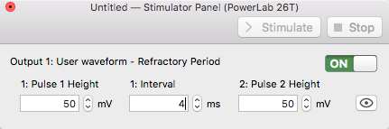
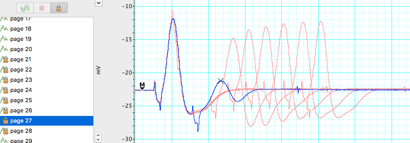

Lab 7: Compound Action Potentials in the Toad Sciatic Nerve
Acknowledgements
Material for this lab was borrowed and adopted from
- Frog Nerve Compound Action Potentials Protocol. Written by Staff of ADInstruments, Dr. Duncan MacKenzie, and Dr. Valerie G. Kalter.
- This week, dissect the toadʻs sciatic nerve, one of the longest motor neurons. Stimulating the frogʻs sciatic nerve will fire a large number of individual nerve fibers (neurons). You will measure the aggregate electrical activity of the nerve known as compound action potentials (CAPs) to explore various properties of nerve function.
Background
The fundamental unit of the nervous system is the neuron. Neurons and other excitable cells produce action potentials when they receive electrical or chemical stimulation. The action potential begins an electrical signal reaches specialized voltage-sensitive membrane sodium (Na\(^+\)) ion channels. When these voltages are above threshhold, these sodium channels open. The large increase in sodium permeability results in membrane depolarization (in other words, the opening of the channels results in Na\(^+\) ions flooding inwards, changing the voltage across the membrane). This is followed by repolarization as the sodium permeability returns to its low baseline value and potassium (K\(^+\)) ion permeability is transiently increased. Note that the actual numbers of ions moving during each action potential, however, are very small and cell ion concentrations are not altered measurably.
Action potentials are “all-or-none” events. Once an action potential begins, it propagates down the length of the axon. When the action potential reaches the end of the axon, a neurotransmitter is typically released into the synapse. Measuring action potentials from single neurons requires highly specialized equipment. Instead, you will record compound action potentials (or CAP) from an isolated peripheral nerve, the frog sciatic nerve, which contains hundreds of axons (Figure 1).
Peripheral nerves include afferent (sensory) nerves and efferent (motor and autonomic) nerves. The individual axons within the nerve vary in diameter and myelination. It is important to appreciate that the threshold voltage required to produce an action potential in each axon reflects the diameter of the individual axon – large diameter axons are stimulated at lower voltages than smaller diameter axons. The myelin sheath is composed of lipid bylayer (fatty substances) and acts as electrical insulation or membrane resistance, which will greatly increase the speed of electrical impulses. Thus, variation in diameter and myelination will in turn influence excitability, threshold, and speed of conduction.
Therefore, the nerve compound action potentials (CAPs) you will record at any stimulus voltage represent the summed “all or nothing” action potentials only from those axons that are excited at that voltage. As the stimulus voltage is increased, more and more axons will be excited until eventually all of the axons within the nerve are excited. Thus, the magnitude of the CAP will increase with increased stimulus strength. After that point (the maximal response), supramaximal stimuli will have no further effect on the magnitude of the CAP. Also, because axons of different diameters have different conduction velocities, as more and more axons are excited, the peaks of the CAP will often broaden in shape as the waveforms with slightly different timings are averaged together).
Note that CAPs arise from extracellular stimulation of the nerve and are recorded by extracellular electrodes, and therefore it will not look like the classical pictures that you see of single nerve action potentials recorded using an intracellular electrode. Your experimental setup will be similar to that in Figure 2. What you are recording here is the difference in potential between two extracellular electrodes (the voltage difference between the recording electrodes in Figure 2).
Take a moment to understand the signal. Remember that you are measuring from the outside of the nerve (outside is positive at rest, inside is negative). In the absence of a stimulus, there is no difference, and you have a baseline recording; but following a stimulus, a wave of depolarization passes down the nerve (a in Figure 2). As this wave crosses the first recording electrode, it becomes negative to the more distal electrode. By convention this difference is shown as a positive defection in the recording (red voltage - black voltage, b in Figure 2). Then, when this wave reaches the second electrode, that electrode now becomes negative to the more proximal electrode and this results in a negative deflection in the recording (d in Figure 2). Nerve propagation therefore results in a biphasic recording.
Because peripheral nerves are bundles of neurons, we can observe refractory periods in them as well. From the beginning of the CAP to the restoration of the resting membrane potentials, neurons are incapable of producing another action potential. This period is referred to as the refractory period, which can be divided into two phases. Initially there is the absolute refractory period, where it is impossible to initiate a second action potential. This is followed by the relative refractory period, where a stimulus of greater than normal intensity can elicit a response. (Why? What is happening during these periods?)
The importance of the CAP lies simply in the fact that it enables us to experimentally demonstrate aspects of nerve physiology. Clinically, CAPs are measured in patients to explore the peripheral nerve lesions and diseases.
What you will do in the laboratory
- Setup and calibration of equipment. In this exercise, you will check that the stimulating and recording connections are set up correctly.
- Determination of threshold voltage and maximal CAP amplitude. Here you will give the nerve a series of stimuli, each increasing in amplitude. You will then be able to calculate the threshold voltage for the nerve, as well as the voltage required for maximum CAP amplitude.
- Determination of the refractory period. In this part of the laboratory, you will deliver paired supramaximal stimuli to the nerve. The interval between these stimuli will be progressively decreased. The results will enable you to determine the relative and absolute refractory periods of your nerve.
- Determination of nerve conduction velocity. Here you will calculate the velocity of the CAP as it travels down the nerve.
- Bi-Directionality of Nerve Conduction. You will demonstrate the ability of a nerve to conduct signals in both directions.
- Strength-Duration Relationships. You will measure ability of a stimulus to elicit a response by changing the stimulus duration as well as its intensity (strength).
Equipment
- PowerLab data acquisition system
- LabChart 8 or later
- Nerve Chamber
- Stimulator Cable (BNC to Alligator Clips) (Note: These are the stimulating electrodes.)
- Two Differential Pod Input Cables (DIN to Alligator Clips) (Note: These are the recording electrodes.)
- One isolated frog sciatic nerve (Rhinella marinus)
- Frog Ringer’s solution
- Pasteur pipette
- Filter paper, moistened with Ringer’s solution
- Thread
- Ruler
- Dissection tools:
- Petri dish
- Sharp scissors or scalpel
- Glass probe and hook for handling nerve
- Bone shears
- Blunt probe
- Dissection tray with wax or pad
- Dissection pins
Procedure
Setup and calibration of equiptment
- Before you begin, unwind (straigthen) all of your cables and wires so that there are no coils.
- Ensure your power cables do not cross any information (USB or otherwise) or electrode wires.
- Try to avoid crossing your electrode wires, and especially make sure your stimulating electrode wires do not touch the recording wires.
- Good electrical contact while minimizing electrical noise is key to obtaining a clean and strong signal.
- Connect the red and black clips from the stimulator electrodes to two of the metal rungs on opposite sides of the Nerve Bath (Figure 3). The distance between the electrodes should be 0.5 cm. It is not necessary to connect the green (ground) clip.
- Connect the red (positive) BNC connector from the stimulator electrode to the positive (+) analog output connector on the PowerLab. Connect the black (negative) BNC connector from the stimulator electrode to the negative (–) analog output connector.
- Connect the red and black leads from the first recording electrode to two of the metal rungs of the Nerve Bath (Figure 3). Connect the 8-pin DIN connector to Input 1 of the PowerLab.
- Connect the leads for the second recording electrode (black closer to stimulator, red farther), but place the microhooks further away from the stimulus electrode (Figure 3). Attach the DIN connector to Input 2 on the PowerLab.
- Using a Pasteur pipette, fill the lower reservoir of the Nerve Bath with frog Ringer’s solution. Fluid in the lower reservoir must not come in contact with the metal electrode rungs. Note: Overfilling the Nerve Bath in this manner will cause a short circuit in your experiment.
- Cut a strip of filter paper and lay it over the wires in the nerve bath so that it touches both stimulating electrodes and both sets of recording electrodes. Moisten the paper strip with frog Ringer’s solution, and place the cover on the nerve bath. This arrangement will be used to test the connections.
- Before turning on the PowerLab, make sure it is connected to the computer via a USB cable.
- Launch LabChart from your computer using the settings file called Toad Nerve Lab settings.
- Go to the Setup menu, select the Stimulator, and then select the waveform Test Connection (Figure 4).
- Open LabChart in Scope View. Click Start. LabChart will now automatically record data for 10ms. A series of stimulus pulses will be recorded (Figure 5). You may need to adjust the axes or auto scale to see the signal. If no signal is recorded, check to make sure the microhooks are secure and the filter paper is moist and draped over all the active wires in the Nerve Bath.
- Once the connections are tested and working, remove the filter paper and proceed to next step.
Nerve dissection procedure
- Remove the skin from the legs and abdomen of a double-pithed toad obtained from your TA. Cut the skin around the abdomen, and deglove the skin from the lower half of the body (Figure 6).
- Keep the exposed tissue moist at all times with frog Ringer’s solution.
- Grasp the urostyle (a bony element of the pelvis) with forceps and cut it free; you should be able to observe the nerve plexus below it (Figure 7), being careful not to damage the nerve plexus.
- From the dorsal side, using a glass hook and/or glass probe, locate and lift the sciatic nerve free from the associated fascia and the sciatic artery. Use blunt dissection techniques, and do not pull or damage the nerve. Also do not touch the nerve with metal.
- You will want to dissect a long piece of sciatic nerve that can span many electrodes in the nerve chamber.
- Tie a piece of thread around the nerve as high up on the nerve as you can reach (near the spinal cord). The string will be used as a “leash”, so that you can handle the nerve gently (touching it as little as possible).
- Using scissors, cut the nerve from the spinal cord and reflect the nerve back onto the leg. (Only use metal to cut the ends of the nerve).
- Using forceps (on muscle) and the glass hook (to touch the nerve), expose the nerve down to the gastrocnemius muscle. Cut the nerve free (Figure 8).
- Immediately place the isolated nerve into a petri plate with ringers solution. Let the nerve rest in ringers for a few seconds, and gently clear away any debris from the nerve using the glass tools. Note: DO NOT GRASP THE NERVE WITH METAL FORCEPS!)
- Lay the nerve across the electrodes of the Nerve Chamber (Figure 3) using the string leash and the glass hook. Place the thicker end of the nerve toward the stimulating electrodes, and make sure that the position where the nerve is tied (the damaged part) is before both stimulating electrodes.
- If necessary gently blot the nerve on a piece of tissue or filter paper to remove any excess Ringer’s solution.
- Make sure the nerve is in contact with each of the active connections, but that no portion of the nerve is touching the fluid or the bottom of the chamber.
- If the nerve is too short to span the second pair of recording electrodes, adjust the position of the recording electrodes as necessary. Place the cover back on the Nerve Bath.
Exercise 1: Finding the threshold voltage and maximum CAP amplitude
A series of stimuli will be given to the nerve, each increasing in amplitude. From these recordings the threshold voltage for the nerve will be calculated, as well as the voltage required for maximum CAP amplitude.
- In the Setup menu, open the Stimulator… dialog, and select Waveform: Threshold.
- From the Setup menu, open the Stimulator Panel.
- In the Stimulator Panel, (Figure 9) set the Pulse Height amplitude to 20mV; do not adjust any other parameters.
- Click Start. LabChart will stimulate the nerve and record 20 blocks of data.
- Increase the pulse height by 20mV, and record again.
- Repeat this until a response is seen or you reach 400mV. If you do not see a response, consult your instructor.
- Enter the stimulus amplitude (pulse height) that elicits the minimum observable response in to the Stimulator Panel dialog. This is the threshold voltage.
- Find the voltage required for maximum CAP amplitude. Increase the stimulus by 10mV steps until the CAP does not increase on three consecutive stimulus amplitude increases or you reach 400mV.
- Save the data file.
Analysis: Determination of threshold voltage and maximum CAP amplitude
- Check the Overlay box in the Scope view but leave the slider set at zero.
- Select the 20 pages that represent the threshold voltage test, then click on the button to lock the selected pages in overlay.
- Place the Marker on the baseline just before the stimulus.
- Adjust the horizontal compression as necessary.
- Looking at the data in Channel 1, use the up and down arrows to scroll through the pages.
- Use the Waveform Cursor to measure CAP amplitude at each stimulus voltage. Fill in Table 1. Each block of data is represented as a page and has a different stimulus voltage shown in channel 3. Note the stimulus level where the first CAP is seen, and where maximum CAP is reached.
| Stimulus amplitude (mV) | CAP amplitude (mV) | Stimulus amplitude (mV) | CAP amplitude (mV) |
|---|---|---|---|
| 20 | 220 | ||
| 40 | 240 | ||
| 60 | 260 | ||
| 80 | 280 | ||
| 100 | 300 | ||
| 120 | 320 | ||
| 140 | 340 | ||
| 160 | 360 | ||
| 180 | 380 | ||
| 200 | 400 | ||
| Threshold stimulus voltage: | mV | ||
| Min Voltage for Max. CAP Amplitude: | mV |
Exercise 2: Determination of the refractory period
Using the minimum voltage for maximum CAP amplitude, stimulate the nerve with a series of pulses varying in pulse interval. In each block of data, the pulse interval will decrease (i.e., the pulses will get closer together). Use this data to find the the relative and absolute refractory periods of your nerve. 1. From the results in Table 1, determine the minimum stimulus voltage required to elicit a maximal CAP from the nerve.
2. From the Stimulator dialog, select waveform> Refractory Period, and close the Stimulator dialog. 3. Open the Stimulator Panel if you have closed it and enter the voltage above in the pulse height for both pulses.

- Record a series of 15 data blocks (displayed as pages). During each page, two pulses are presented to the nerve. You will decrease the time interval between the pulses decreases with each successive page.
- Click Start, LabChart will stimulate the nerve 2 times 4 milliseconds apart.
- Add a comment stating the interval between pulses (4 ms) for the record.
- Change the interval between pulses to 3.5 ms, click Start. Add a comment stating the interval period (3.5 ms) for the record.
- Repeat for each specified interval Table 2 in the Data Notebook, adding a comment stating the interval period for each record.
- Save your data, do not close the file.
Analysis
Determination of refractory period
Select the 15 data pages recorded in Exercise 2, and lock them into Overlay mode. Place the Marker on the baseline and use the Waveform Cursor to measure the amplitude for the second CAP. Record these values in Table 2. Determine the stimulus interval where the amplitude of the second CAP first shows a decrease. This is the relative refractory period. Determine the stimulus interval where the second CAP completely disappears. This is the absolute refractory period. Record both of these values in Table 2.

| Stimulus interval (ms) | Amplitude of second CAP | Stimulus interval (ms) | Amplitude of second CAP |
|---|---|---|---|
| 4.0 | 1.6 | ||
| 3.5 | 1.5 | ||
| 3.0 | 1.4 | ||
| 2.5 | 1.3 | ||
| 2.0 | 1.2 | ||
| 1.9 | 1.1 | ||
| 1.8 | 1.0 | ||
| 1.7 | |||
| Relative refractory period (ms) | |||
| Absolute refractory period (ms) |
Exercise 3: Nerve conduction velocity and temperature sensitivity
Analysis
Calculating conduction velocity
Room temperature. Using the data in Exercise 1, make a selection in channels 1 and 2 that includes the CAP. Open the Zoom window, and use the Marker and Waveform Cursor to determine the time interval for the CAP to travel between the two recording electrodes (Figure 12). Place the marker on the first CAP peak.
Place the waveform cursor over the second CAP peak. Record the value for time differential (\(\Delta\)t) in milliseconds in Table 3.
Using a ruler, measure the distance in millimeters between the black negative leads of each of the two recording electrodes. Record in Table 3.
Calculate the conduction velocity from the distance between the electrodes and time interval between CAPs:
Conduction velocity (m/sec) = \(\frac{Distance(mm)}{Time(ms)}\)
| Parameter | cold | room temperature | warm |
|---|---|---|---|
| Temperature (C) | |||
| Distance between recording electrodes (mm) | |||
| Time interval between CAP1 and CAP2 (ms) | |||
| Conduction velcoity (m/s) |
- Chill the nerve by placing it in a Petri dish with cold Ringer’s (~4°C). Replace the Ringerʻs in the nerve chamber with cold Ringerʻs.
- Place the nerve in the chamber and quickly run the Conduction Velocity macro.
- Repeat with warm Ringer’s (~35°C) and complete Table 3.
Exercise 4: Bi-Directionality of Nerve Conduction
The ability of a nerve to conduct signals in both directions can be observed by changing the recording and stimulating leads.
- The thicker end of the nerve originates closer to the spinal cord, and the thinner end is more distal.
- Change the position of the leads to stimulate starting from the thinner end (Figure 13).
- Run the Threshold macro as in Exercise 1. Stimulator dialog, select Waveform: Threshold. Pulse Height amplitude 20 mV.
- Right click in the first data block of this exercise and enter the comment “Bi-Directionality” and save your data file.
Analysis
Compare the threshold voltage necessary to elicit a maximum response from the nerve when stimulating from the thick end of the nerve (Exercise 1) vs. stimulating from the distal (thinner) end of the nerve (Table 4).
| Stimulus amplitude (mV) | CAP amplitude (mV) | Stimulus amplitude (mV) | CAP amplitude (mV) |
|---|---|---|---|
| 20 | 220 | ||
| 40 | 240 | ||
| 60 | 260 | ||
| 80 | 280 | ||
| 100 | 300 | ||
| 120 | 320 | ||
| 140 | 340 | ||
| 160 | 360 | ||
| 180 | 380 | ||
| 200 | 400 | ||
| Threshold stimulus voltage: | mV | ||
| Min Voltage for Max. CAP Amplitude: | mV |
Exercise 5: Stimulus Strength-Duration Relationships
The ability of a stimulus to elicit a response is dependent on the stimulus duration as well as its strength (intensity). The relationship between strength and duration can be derived empirically for your sciatic nerve preparation. Strength-duration curves are often used by physiologists as a relative measure of a nerve’s excitability.
- Change the stimulator leads back so that you are stimulating the proximal (thick) end of the sciatic nerve.
- Open the Stimulator dialog and select Waveform: Threshold.
- In the Stimulator Panel, set the Pulse Height amplitude to 20 mV, and select a pulse duration of 50 \(\mu\)s. Click Start.
- Right click in the first data block of this exercise and enter the comment “strength-duration”.
- Increase the stimulus by 20 mV and repeat until a CAP is observed.
- Now return the stimulus pulse height to 20 mV, and repeat with durations of 100 \(\mu\)s, 250 \(\mu\)s, 500 \(\mu\)s, 750 \(\mu\)s, 1000 \(\mu\)s (you used 150 \(\mu\)s for the first exercise).
- Save your data file.
Analysis
- Use the overlay to determine when reaching threshold by comparing your trace to previous subthreshold traces. The voltage where the CAP is barely detectable in Channel 1 is the suprathreshold stimulus voltage.
- Record the effective stimulus amplitude at which you first reach threshold for each duration (Table 5).
| Duration (\(\mu\)s) | Threshold Voltage (mV) |
|---|---|
| 50 | |
| 100 | |
| 150 | |
| 250 | |
| 500 | |
| 750 | |
| 1000 |
- Graph these data with Threshold Voltage (mV) on the ordinate and duration (msec) on the abscissa.
- Find rheobase on your plot. Rheobase is the minimum stimulus intensity that will elicit a response at infinite duration (where stimulus intensity reaches an asymptote with respect to duration). If you have printed a copy you may wish to mark this with an arrow.
- Find chronaxie on your plot. Chronaxie is the stimulus duration required at a stimulus strength of 2x rheobase. If you have printed a copy you may wish to mark this with an arrow.
Suggestions for the Results Section
Conduct the appropriate analyses on your data and present your findings in paragraph form with the aid of graphs and/or tables as needed. Typically, for this type of experiment one would report:
- Determination of threshold voltage
- The maximum CAP amplitude
- Determination of the refractory period
- Calculation of conduction velocity
- Sensitivity of conduction velocity on Temperature (with Q10)
- Threshold voltage for forward vs reverse stimulation (bidirectionality)
- Stimulus strength vs. duration relationship
Questions for Thought:
- How does a CAP differ from a single action potential? Would you see any differences in your data between the two?
- What is the cause of the relative refractory period? Briefly describe the cellular events that occur during the refractory period (Hint: Discuss the mechanism of repolarization). Explain the difference between the relative and absolute refractory periods. What evidence do you see of these phenomena in your data?
- Action potentials are said to be “all or none” responses. Why does the toad sciatic nerve give what looks like a graded response?
- What was the smallest voltage required to produce the maximum CAP? What proportion of the nerve fibers was excited to produce this response?
- Based on your calculation for CAP conduction velocity, how long would it take the CAP to travel the length of the sciatic nerve? Assume a total length of 10 cm. How could this be important for the animal?
- How does the temperature sensitivity of nerve conduction velocity compare to other physiological processes in the toad? If there is a difference, what are possible mechanisms that might cause the differences? Hint: You have already determined Q10 for cardiac (muscle) function in the toad.
- Why were you still able to elicit a CAP after reversing the direction of stimulation? How did the appearance of the frog CAP change in comparison to when it was in its original orientation? How do you explain this?
- What is happening in the nerve at the voltage-duration combinations that you are identifying as threshold? (Strength-duration experiment)
- Based on what you learned, what are the major factors involved in signal propagation through peripheral nerves in the toad? In vertebrates generally?
After Lab:
- This will be a group lab report.
- Please divide the work of writing the report by experiment, so that each person benefits from the experience of writing the intro, methods, results, and discussion. This will also ensure that the ideas are better connected between sections.
- Please think about effective figures for this interesting lab, and the results will jump out at you. It will also be easier to write the discussion.
- Please remember to include respective contributions.